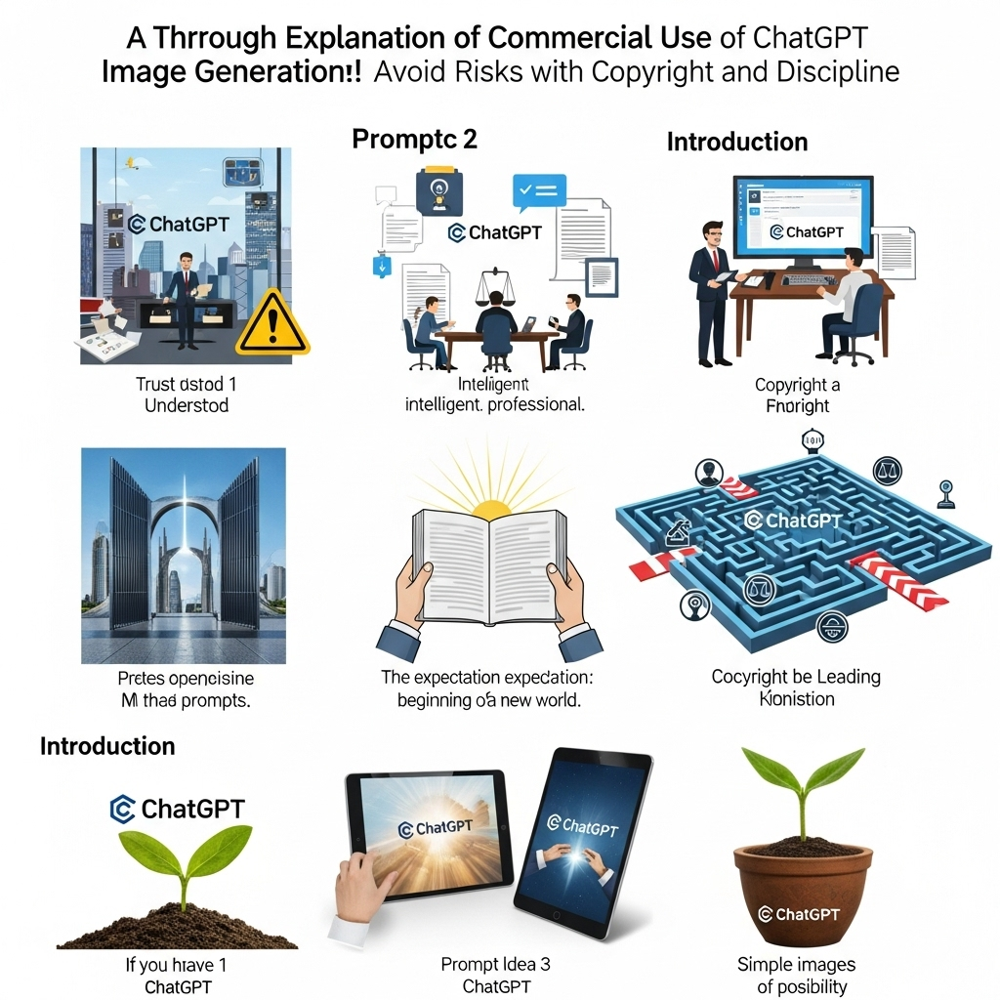
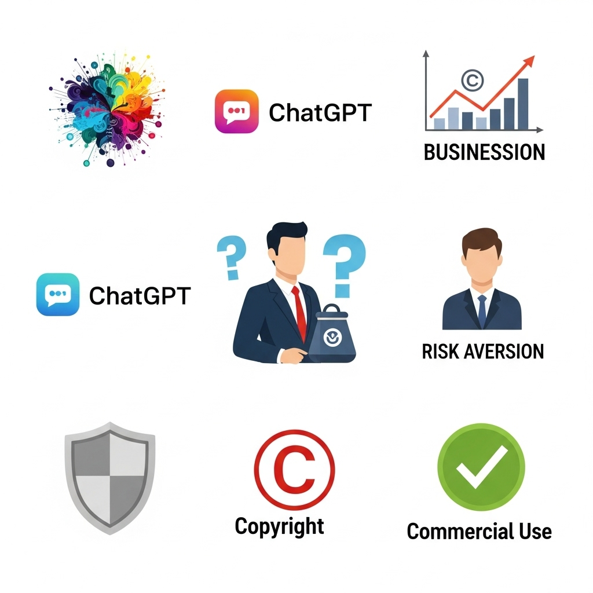
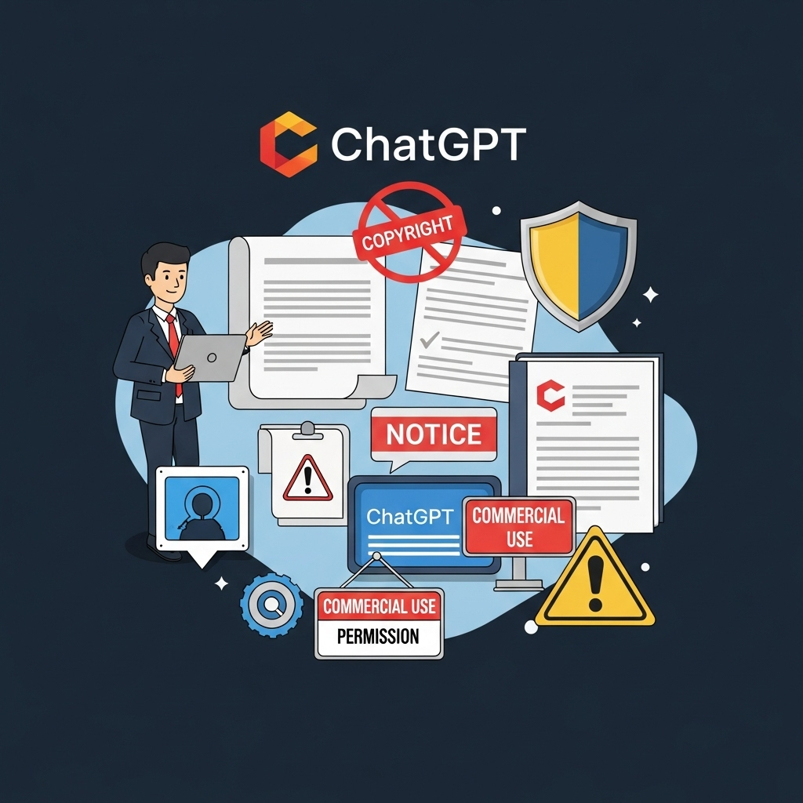
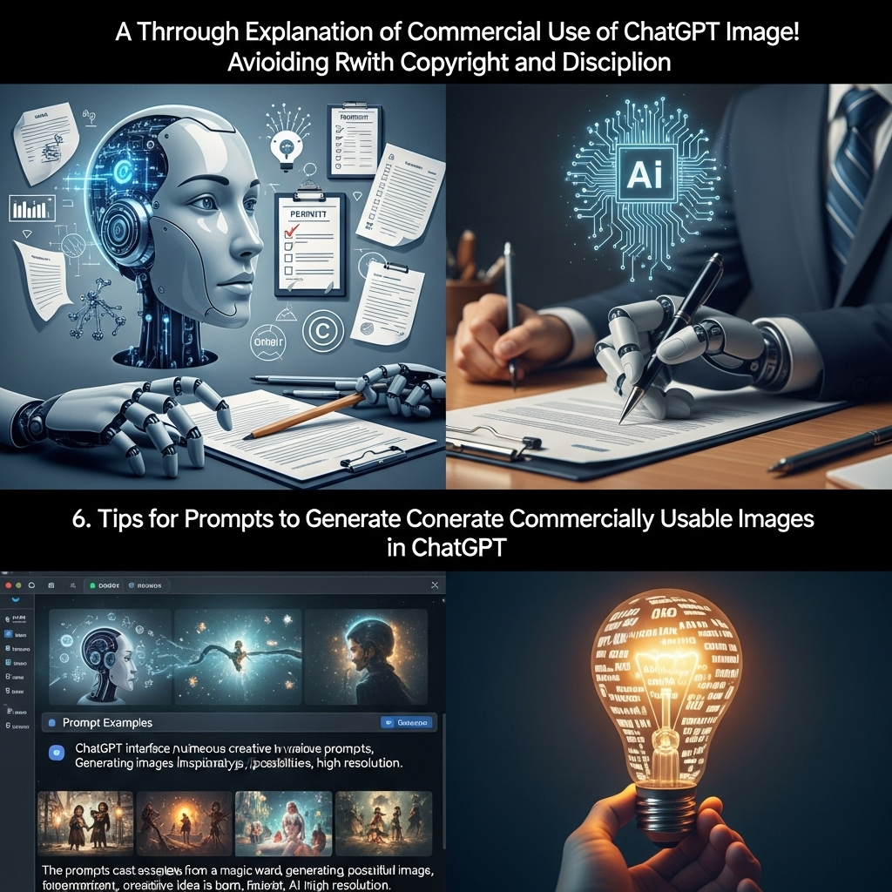

ChatGPT画像生成の商用利用を徹底解説！著作権と規律でリスク回避

近年、人工知知能（AI）の進化は目覚ましく、私たちの生活やビジネスのあり方を大きく変えつつあります。特に、テキストから画像を生成するAI技術は、その驚異的な表現力と手軽さから、多くの注目を集めています。その中でも、OpenAIが開発したChatGPTに統合された画像生成機能「DALL-E3」は、私たちが思い描くイメージを瞬時に視覚化する強力なツールとして、クリエイティブ業界だけでなく、あらゆるビジネスシーンでの活用が期待されています。
しかし、この画期的な技術を商用利用するにあたっては、「生成された画像は本当に自由に使えるのか？」「著作権はどうなるのだろう？」「何か法的なリスクはないのだろうか？」といった疑問や不安を抱える方も少なくないでしょう。新しい技術であるからこそ、その利用には慎重な姿勢が求められます。安易な利用は、思わぬトラブルや法的リスクに繋がりかねません。
この記事では、ChatGPTの画像生成機能を商用利用する際の基本的なルールから、OpenAIの公式規約、著作権に関する法的リスク、そしてそれらを回避するための具体的なポイントまでを、徹底的に解説していきます。私たちは、このAI時代において、技術の恩恵を最大限に享受しつつも、法と倫理を遵守し、安全かつ効果的にクリエイティブな活動を行うための知識を持つことが非常に重要だと考えています。
どうぞご安心ください。この記事は、専門的な内容を分かりやすく、そして落ち着いたトーンで、皆さんの疑問を一つ一つ丁寧に紐解いていきます。まるで信頼できる友人が隣で語りかけてくれるかのように、親しみやすい雰囲気で、ChatGPTの画像生成を商用利用する上での羅針盤となる情報を提供することをお約束します。AIの力を借りて、あなたのビジネスやプロジェクトを次のレベルへと引き上げるための第一歩を、この記事と共に踏み出しましょう。
1. ChatGPTで生成した画像は商用利用できる？基本を解説

ChatGPTの画像生成機能は、その登場以来、多くのクリエイターやビジネスパーソンから大きな関心を集めています。テキストで指示するだけで、瞬時に高品質な画像を生成できるというその能力は、従来の画像制作プロセスに革命をもたらす可能性を秘めているからです。しかし、この革新的な技術をビジネスの現場で活用する、つまり「商用利用」するとなると、いくつかの基本的な疑問が浮かび上がってくることでしょう。ここでは、まずその疑問の根幹に迫り、ChatGPTの画像生成機能の概要と、商用利用の可能性について解説します。
1．ChatGPTの画像生成機能（DALL-E3）とは
ChatGPTの画像生成機能は、OpenAIが開発した最先端の画像生成AIモデル「DALL-E3」を基盤としています。DALL-E3は、GPTシリーズの強力な言語理解能力と連携することで、より詳細でニュアンスに富んだプロンプト（指示文）を正確に解釈し、ユーザーの意図を忠実に反映した画像を生成できる点が最大の特徴です。
具体的には、DALL-E3は以下のような驚くべき能力を持っています。
- 高精度な画像生成: 非常に具体的で複雑なプロンプトに対しても、高い解像度と品質の画像を生成します。単なるオブジェクトの配置だけでなく、光の加減、質感、雰囲気、さらには特定の画風やスタイルまで、細部にわたる指示を理解し、表現することが可能です。
- 自然言語処理の強化: ChatGPTとの統合により、DALL-E3は自然言語での指示をこれまでの画像生成AIよりも格段に正確に理解します。これにより、プロンプトエンジニアリング（効果的な指示文を作成する技術）のハードルが下がり、より直感的に理想の画像を生成できるようになりました。例えば、「夕焼け空の下、桜並木を歩くカップル、水彩画のようなタッチで」といった、詩的で抽象的な表現も具体的な画像として具現化できます。
- 多様なスタイルとテーマへの対応: 写実的な写真から、イラスト、アニメ、油絵、水彩画、ピクセルアート、抽象画まで、幅広いアートスタイルに対応しています。また、人物、風景、動物、建築物、コンセプトアートなど、あらゆるテーマの画像を生成できるため、多様なビジネスニーズに応えることができます。
- 画像内のテキスト生成: DALL-E3は、画像内にテキストを正確に埋め込む能力も向上しています。これは、ロゴデザイン、広告バナー、ポスターなど、テキスト情報が不可欠な商用利用において非常に重要な機能となります。
- 迅速なアイデア具現化: 従来の画像制作では数時間、あるいは数日かかっていたようなイメージの具現化が、DALL-E3を使えば数秒から数分で完了します。これにより、デザインの初期段階でのアイデア出しや、多様なバリエーションの試作が圧倒的なスピードで行えるようになります。
DALL-E3は、現在、ChatGPT PlusやChatGPT Enterpriseといった有料プランのユーザー、またはOpenAI APIを通じて利用可能です。これらの機能は、単に画像を生成するだけでなく、ビジネスにおけるクリエイティブなプロセスを根本から変革し、新たな価値を創造する可能性を秘めていると言えるでしょう。
2．基本的に商用利用は可能だが条件がある
では、ChatGPT（DALL-E3）で生成した画像は、ビジネス目的で利用できるのでしょうか？ この問いに対する答えは、「基本的に商用利用は可能ですが、いくつかの重要な条件があります」となります。
OpenAIは、DALL-E3を含む自社のAIモデルで生成されたコンテンツについて、ユーザーがそのコンテンツの所有権を持つことを明確にしています。これは、生成された画像をウェブサイト、広告、マーケティング資料、商品パッケージ、プレゼンテーション、ソーシャルメディアコンテンツなど、様々な商用目的で利用できることを意味します。この方針は、クリエイターや企業がAI技術を安心してビジネスに組み込む上で、非常に心強いものです。
しかし、この「基本的に可能」という言葉には、重要な「ただし書き」が伴います。その条件とは、主に以下の点に集約されます。
- OpenAIの利用規約（Terms of Use）の遵守: 最も基本的な条件として、OpenAIが定めている利用規約やコンテンツポリシーを厳守する必要があります。これには、禁止されているコンテンツの生成や利用、倫理的なガイドラインの順守が含まれます。
- 著作権に関するリスクの理解と対策: AIが既存のデータから学習している以上、生成された画像が意図せず既存の著作物に酷似してしまうリスクがゼロではありません。もし生成された画像が他者の著作権を侵害していた場合、その責任は利用者に問われる可能性があります。
- 倫理的な利用の徹底: 技術の進歩とともに、AIの倫理的な利用に関する社会的な議論も活発化しています。誤情報の拡散、差別、プライバシー侵害など、AI生成物が引き起こしうる倫理的な問題に対して、利用者は常に意識し、責任ある行動が求められます。
これらの条件を深く理解し、適切に対処することで、ChatGPTの画像生成機能を安全かつ効果的に商用利用することが可能になります。安易に「商用利用可能」という言葉だけを鵜呑みにするのではなく、その背後にある規約や法的・倫理的な側面をしっかりと把握することが、リスクを回避し、持続可能なビジネス活動を行う上で不可欠なのです。次のセクションからは、これらの条件についてさらに詳しく掘り下げていきます。
2. ChatGPTの生成AI画像商用利用における公式規約と注意点

ChatGPTの画像生成機能であるDALL-E3を商用利用する上で、最も重要かつ最初に確認すべきは、提供元であるOpenAIの公式規約です。規約は、私たちがこの強力なツールをどのように利用すべきか、何が許され、何が禁止されているのかを明確に示しています。ここでは、OpenAIの利用規約（Terms of Use）を中心に、クレジット表示の必要性、そして禁止事項と倫理的な利用ガイドラインについて詳しく見ていきましょう。
1．OpenAIの利用規約（Terms of Use）を確認する
OpenAIの利用規約（Terms of Use）は、ChatGPTを含むOpenAIのサービスを利用する全てのユーザーが従うべき法的な合意文書です。この規約は、AI生成コンテンツの所有権、利用範囲、責任の所在など、商用利用に関する重要な情報を含んでいます。
まず、最も注目すべき点として、OpenAIは通常、ユーザーがChatGPT（DALL-E3）を通じて生成したコンテンツの所有権をユーザー自身に帰属させると明記しています。これは、生成された画像を商業目的で自由に利用できるという、非常に強力な根拠となります。例えば、あなたの会社がDALL-E3で生成した画像を広告キャンペーンに使用する場合、その広告画像は基本的にあなたの会社の所有物となり、著作権（もし発生すれば）もあなたに帰属するという解釈が可能です。
しかし、この所有権の帰属にはいくつかの条件が付随します。
- コンテンツの利用権: 規約では、OpenAIが生成されたコンテンツをサービス改善や研究目的で利用する権利を留保している場合があります。これは、ユーザーが生成した画像が、OpenAIのAIモデルの学習データとして利用される可能性があることを意味します。
- 規約違反の場合の権利喪失: もしユーザーが利用規約やコンテンツポリシーに違反した場合、生成されたコンテンツの利用権や所有権が剥奪される可能性があります。これは、不正な利用や禁止されているコンテンツの生成は許されないという明確なメッセージです。
- 規約の変更可能性: OpenAIの利用規約は、技術の進歩や法的な動向、社会情勢の変化に伴い、予告なく変更される可能性があります。そのため、商用利用を継続する企業や個人は、定期的にOpenAIの公式サイトで最新の規約を確認し、内容を理解しておくことが極めて重要です。特に、大規模なプロジェクトや長期的な利用を計画している場合は、この確認を怠らないようにしましょう。
- 地域による法的解釈の違い: 利用規約はOpenAIが提供するサービス全体に適用されますが、国や地域によっては、著作権法やデータ保護法など、関連する法律の解釈が異なる場合があります。国際的なビジネスを展開している場合や、特定の地域での利用を検討している場合は、その地域の法的専門家への相談も視野に入れるべきでしょう。
利用規約は、多くの場合、専門的な法律用語で書かれているため、一見すると難解に感じるかもしれません。しかし、商用利用を行う上では、その内容を曖昧にせず、時間をかけてでもしっかりと読み込み、理解を深めることが、将来的なリスクを回避するための最も確実な第一歩となります。もし理解が難しい部分があれば、法務部門や法律の専門家に相談することも検討しましょう。
2．クレジット表示の必要性について
AI生成コンテンツの利用において、よく疑問に挙がるのが「クレジット表示（作成者名の表示）は必要なのか？」という点です。ChatGPT（DALL-E3）で生成した画像の場合、OpenAIの現在の利用規約では、通常、OpenAIやDALL-E3のクレジット表示は義務付けられていません。
これは、ユーザーが生成コンテンツの所有権を持つというOpenAIのスタンスと整合しています。つまり、あなたがDALL-E3を使って生成した画像を自身のウェブサイトや広告で使用する際、必ずしも「この画像はDALL-E3で生成されました」といった表記をする必要はない、ということです。
しかし、「義務付けられていない」からといって、一切表示しないことが常に最善であるとは限りません。以下のような状況では、クレジット表示やAI利用の明示を検討する価値があります。
- 透明性の確保と倫理的配慮: AI生成コンテンツが社会に浸透する中で、その透明性に対する要求は高まっています。特に、ニュース記事の挿絵、学術発表、公衆への情報提供など、信頼性が求められる場面では、「このコンテンツはAIによって生成されたものである」と明示することが、読者や視聴者への誠実な態度と受け止められ、倫理的な信頼性を高めることに繋がります。
- 社会的な受容性の向上: AI生成コンテンツに対する人々の感情はまだ揺れ動いています。AIであることを明示することで、不必要な誤解や批判を避け、社会的な受容性を高める一助となる可能性があります。
- 将来的な法改正への備え: AI生成コンテンツに関する法整備は世界中で進行中であり、将来的にクレジット表示が義務付けられる可能性も否定できません。現段階で自主的に表示を習慣化しておくことは、将来的な規制変更にスムーズに対応するための準備となり得ます。
- 技術へのリスペクト: AI技術の発展に貢献したOpenAIへのリスペクトとして、あるいは単に新しい技術の利用をアピールする目的で、任意でクレジット表示を行う企業やクリエイターも存在します。
結論として、OpenAIの規約上はクレジット表示は必須ではありませんが、ビジネスの性質、コンテンツの用途、そして社会的な要請を考慮し、任意での表示を検討することは、多くのメリットをもたらす可能性があります。特に、企業としてコンプライアンスや倫理的な姿勢を重視するのであれば、AI利用の透明性を高めることは非常に有効な戦略となるでしょう。
3．禁止事項と倫理的な利用ガイドライン
OpenAIは、その強力なAIモデルが悪用されることを防ぎ、安全かつ責任ある利用を促進するために、厳格な禁止事項と倫理的な利用ガイドライン（Content Policy）を定めています。これらのガイドラインは、商用利用を行う上で絶対に遵守しなければならない重要なルールです。
具体的に、OpenAIが禁止しているコンテンツ生成や利用のカテゴリは多岐にわたります。主なものを以下に挙げ、それぞれについて解説します。
- ヘイトスピーチ、差別、暴力の助長:
特定の個人、集団、人種、民族、宗教、性別、性的指向、障害などを標的とした差別的な内容、憎悪を煽る表現、暴力を賛美または助長するコンテンツの生成は固く禁じられています。AIは社会の偏見を学習データから取り込んでしまう可能性があるため、意図せず差別的な画像を生成してしまうリスクもあります。利用者は、生成された画像にそのような要素が含まれていないか、常に注意深く確認する必要があります。 - 性的描写、露骨なコンテンツ:
成人向けの露骨な性的コンテンツ、児童の性的搾取につながるコンテンツの生成は厳しく禁止されています。これは、ポルノグラフィや性的な画像だけでなく、性的なニュアンスを含むような間接的な表現も対象となる場合があります。 - 違法行為の助長:
違法な薬物の製造や使用、銃器の密売、テロリズム、詐欺など、あらゆる違法行為を奨励、促進、描写するコンテンツの生成は禁止されています。 - 個人情報の侵害とプライバシーの侵害:
他者の個人情報（氏名、住所、電話番号、メールアドレスなど）を不適切に利用したり、プライバシーを侵害するような画像を生成したりすることは禁じられています。特に、実在の人物の顔を無断で生成・利用することは、肖像権やプライバシー権を侵害するリスクがあるため、細心の注意が必要です。 - 誤情報、偽情報の拡散:
選挙に関する誤情報、公衆衛生に関する偽情報、詐欺的な情報など、社会に混乱や害をもたらす可能性のある誤った情報の生成や拡散は禁止されています。AIが生成した画像が、あたかも真実であるかのように用いられ、世論を操作するような事態は避けるべきです。 - ハラスメント、いじめ、脅迫:
特定の個人を対象とした嫌がらせ、いじめ、脅迫、名誉毀損に当たるようなコンテンツの生成は禁止されています。 - 自傷行為の助長:
自傷行為、自殺、摂食障害など、心身の健康を害する行為を助長するコンテンツの生成は禁止されています。
これらの禁止事項は、AI技術を責任ある形で利用し、社会にポジティブな影響を与えるための基盤となります。OpenAIのAIモデルは、これらのガイドラインに違反するコンテンツの生成を検知し、制限するための安全対策が講じられていますが、最終的な責任は常にユーザーにあります。
商用利用を行う企業や個人は、生成された画像を公開・利用する前に、これらの禁止事項に抵触していないかを徹底的に確認する必要があります。単に「見た目が良い」というだけでなく、「社会的に適切か」「倫理的に問題がないか」という多角的な視点から評価することが不可欠です。AIの力は強力だからこそ、その利用には常に倫理的な責任感が伴うことを忘れてはなりません。
3. 生成AI画像の著作権はどうなる？商用利用時の法的リスク
AIが生成した画像の商用利用を考える上で、最も複雑で、かつ最も重要なのが「著作権」の問題です。従来の創作物とは異なる特性を持つAI生成物に対して、既存の著作権法がどのように適用されるのか、あるいはされないのか、その解釈はまだ定まっていません。このセクションでは、AI生成物の著作権に関する現状と課題、著作権侵害のリスク、そしてオリジナリティの重要性について深く掘り下げていきます。
1．AI生成物の著作権に関する現状と課題
AIが生成した画像に著作権が認められるか否かは、世界中で活発な議論が交わされている、非常に現代的な法的課題です。現在の多くの国、特に日本や米国においては、著作権は「人間の創作物」にのみ認められるという考え方が主流です。
- 日本の著作権法における解釈:
日本の著作権法では、「著作物とは、思想又は感情を創作的に表現したものであって、文芸、学術、美術又は音楽の範囲に属するものをいう」と定義されており、その創作主体は「人」であると解釈されています。したがって、AIが完全に自律的に生成した画像は、原則として著作権の対象とはならない、という見解が現在の主流です。これは、AIは「思想や感情」を持たないため、その生成物に創作性は認められない、という論理に基づいています。 - 米国における見解:
米国著作権局（US Copyright Office）も同様に、著作権は「人間の創作性」が必要であるとの見解を示しています。AIが単独で生成したアートワークに対しては、著作権登録を拒否する事例も出ています。しかし、人間がプロンプトの作成、生成された画像の選定、修正、加工などにおいて「十分な創作的寄与」を行った場合には、その人間の創作部分に著作権が認められる可能性はあります。
課題:
- 「人間の創作的寄与」の線引き: AIが生成した画像に対して、人間がどの程度の介入を行えば「人間の創作物」と見なされ、著作権が発生するのか、その明確な線引きが非常に難しいという課題があります。プロンプトの工夫、生成された画像の中から意図するものを選択する行為、あるいは生成後に加える修正や加工の度合いによって、著作権の有無や帰属が変わる可能性があります。
- 学習データに含まれる著作物の問題: AIは膨大な既存の著作物（画像、テキストなど）を学習データとして利用しています。この学習行為自体が著作権侵害に当たるのか、また、学習データに含まれる著作物の特徴が生成物に反映された場合、それは著作権侵害となるのか、という根本的な問題も議論されています。
- 権利の帰属の不明確さ: もしAI生成物に著作権が発生した場合、その権利は誰に帰属するのかという問題もあります。AIの開発者か、AIの利用者か、あるいはプロンプトを作成した人か。現状では、利用者（プロンプト作成者や編集者）に帰属するという見方が有力ですが、法的な明確化が待たれます。
- 国際的な法的枠組みの必要性: AI技術は国境を越えて利用されるため、国際的に統一された法的枠組みが求められています。しかし、各国の法制度や文化の違いから、その実現には時間がかかると予想されます。
現時点では、AIが完全に自律的に生成した画像には著作権が認められない可能性が高い、という認識を持つことが重要です。しかし、人間がAIを「ツール」として活用し、自身の思想や感情を表現するために積極的に関与した場合、その「人間の創作性」の部分に著作権が発生する余地は十分にあります。商用利用を考える際には、この「人間の創作的寄与」を意識し、リスクを最小限に抑える戦略が求められます。
2．著作権侵害のリスクとその回避策
AI生成画像が著作権の課題を抱えていることの最も現実的な影響は、意図せず他者の著作権を侵害してしまうリスクがあることです。AIは、学習データとして取り込んだ膨大な画像の中からパターンや特徴を抽出し、それらを組み合わせて新たな画像を生成します。このプロセスにおいて、既存の著作物に酷似した画像が生成されてしまう可能性が常に存在します。
著作権侵害のリスクの具体例:
- 既存のキャラクターやロゴとの類似: 特定のプロンプト（例：「〇〇（有名キャラクター）風のイラスト」）を使用したり、あるいは意図せずとも、AIが学習データから特定のキャラクターやロゴの特徴を強く反映した画像を生成してしまうことがあります。これは、著作権だけでなく、商標権の侵害にも繋がり、非常に大きな法的リスクを伴います。
- 特定の画家のスタイルや作品との酷似: 著名な画家のスタイルを模倣するようなプロンプトを使用した場合、その画家の作品と極めて類似した画像が生成される可能性があります。これも、著作権侵害の訴訟に発展するリスクがあります。
- オリジナルの写真やイラストとの酷似: ストックフォトサイトや個人の作品など、広く公開されている著作物と、AI生成画像が偶然にも酷似してしまうケースも考えられます。この場合、利用者は意図していなくても、著作権侵害と判断される可能性があります。
著作権侵害の法的判断基準:
著作権侵害が成立するかどうかは、主に以下の2つの要素で判断されます。
- 依拠性（いきてい）: 侵害されたとされる著作物に依拠して（真似して）創作されたものであること。AI生成画像の場合、AIが学習データとして既存の著作物に依拠しているため、この点は常に問題となり得ます。
- 類似性（るいじせい）: 侵害されたとされる著作物と、AI生成画像が実質的に類似していること。これは、両者の表現が客観的に似ているかどうかで判断されます。
AI生成画像の場合、依拠性はAIの学習プロセスに内在するため、問題は「類似性」の判断に集約されることが多いでしょう。
著作権侵害のリスク回避策:
- プロンプトの工夫:
特定の著作物、キャラクター、ロゴ、アーティスト名を直接的に指定するプロンプトは避けるべきです。
抽象的で一般的な表現を用いるか、複数の要素を組み合わせて独自のアイデアを生成するように促しましょう。例えば、「〇〇風」と指定する代わりに、その「〇〇」の特徴（「鮮やかな色彩と大胆な筆致の油絵」「モノクロでシャープなコントラストのストリートフォト」など）を言葉で具体的に描写することで、間接的にスタイルを指示します。 - 生成画像の徹底的な確認:
生成された画像が、既存の著作物（特に有名なもの）と酷似していないか、公開前に必ず目視で確認しましょう。Google画像検索の類似画像検索機能などを活用するのも有効です。
特に、人物の顔、服装、背景のオブジェクト、ロゴ、独特の構図などに注意を払います。 - オリジナリティの追加:
AIが生成した画像をそのまま利用するのではなく、人間が加筆修正、加工、合成などを行うことで、自身の創作性を付加しましょう。これにより、「人間の創作的寄与」を明確にし、著作権発生の根拠を強化できます。
生成された画像を複数の要素として利用し、独自のレイアウトやデザインに組み込むことも有効です。 - 複数の生成オプションの検討:
一つのプロンプトから複数の画像を生成し、最もオリジナリティが高く、既存の著作物との類似性が低いものを選ぶようにしましょう。 - 不確実な場合は利用を避ける:
少しでも著作権侵害のリスクがあると感じた場合や、判断に迷う場合は、その画像の商用利用を避けるのが賢明です。代替の画像を生成するか、他の素材を利用することを検討しましょう。 - 専門家への相談:
大規模なプロジェクトや、法的なリスクが高いと判断される場合は、著作権専門の弁護士に相談し、法的なアドバイスを求めることが最も確実なリスク回避策となります。
著作権侵害は、損害賠償請求や差止請求といった大きな法的責任を伴う可能性があります。AI生成画像の商用利用においては、これらのリスクを十分に理解し、常に慎重な姿勢で臨むことが求められます。
3．類似性判断とオリジナリティの重要性
前述の通り、著作権侵害の判断において「類似性」は極めて重要な要素です。AI生成画像の商用利用においては、この類似性の判断をいかにクリアし、自身の画像の「オリジナリティ（独創性）」を確保するかが、法的リスクを低減する鍵となります。
類似性判断の難しさ:
著作権法における類似性の判断は、非常に複雑であり、最終的には裁判所の判断に委ねられることが多いです。単に「似ている」という主観的な印象だけでなく、著作物の「本質的な特徴」や「創作的表現」が共通しているかどうかが問われます。
AI生成画像の場合、AIが学習した膨大なデータの中に、著作権保護の対象となる作品が含まれているため、意図せずとも学習データの「特徴」を反映した画像が生成される可能性があります。例えば、特定の画家の筆致や色彩構成、あるいは写真家が独自の視点で捉えた構図などが、生成画像に現れてしまうことも考えられます。
このような状況で、AI生成画像が既存の著作物と「実質的に類似している」と判断されてしまうと、たとえ利用者が著作権侵害の意図を持っていなかったとしても、著作権侵害が成立する可能性があります。
オリジナリティの重要性:
このようなリスクを回避し、安全に商用利用を行うためには、生成された画像に高い「オリジナリティ」を確保することが不可欠です。オリジナリティとは、その作品が他者の模倣ではなく、作者自身の独自の発想や表現によって生み出されたものであることを指します。
AI生成画像においてオリジナリティを高めるための具体的なアプローチは以下の通りです。
- プロンプトによる独創性の追求:
単に一般的な指示を出すだけでなく、具体的なディテール、独自のコンセプト、複数の要素の組み合わせなど、他では見られないようなユニークなプロンプトを作成することが重要です。
特定のジャンルやスタイルの画像を生成する場合でも、そこに自分なりの解釈やひねりを加えることで、オリジナリティを高めることができます。例えば、「サイバーパンクな都市の風景」だけでなく、「雨に濡れるネオン街を、浮遊するドローンが撮影しているような、日本の浮世絵風のサイバーパンク都市」といった具体的な描写を加えることで、より独自の表現を引き出せます。 - 人間による「創作的寄与」の最大化:
AIが生成した画像をそのまま使うのではなく、人間が積極的に手を加えることで、その画像のオリジナリティと自身の創作性を向上させることができます。
選定と編集: 複数の生成画像の中から、最も自身の意図に合致し、かつオリジナリティの高いものを選び出す行為自体が創作的寄与となり得ます。さらに、選んだ画像に対して、トリミング、色調補正、要素の追加・削除、合成、テキストの配置など、具体的な編集作業を行うことで、その画像は「人間の手による創作物」としての性格を強めます。
二次創作的な加工: AI生成画像を「素材」の一つとして捉え、他の素材と組み合わせたり、全く異なる文脈で利用したりすることで、新たな価値とオリジナリティを生み出すことができます。 - 多角的な視点での確認:
生成された画像が、既存の著作物と類似していないか、自分だけでなく複数の目で確認することも有効です。特に、商用利用する前には、第三者の意見を聞くことで、客観的な類似性判断を助けることができます。
著作権に関する知識を持つ専門家（弁護士など）に、最終的な利用可否を相談することも、大規模なプロジェクトでは検討すべきです。
AIは強力なツールですが、最終的にその画像をどのように利用し、どのような責任を負うかは、利用者である私たちに委ねられています。高いオリジナリティを追求し、慎重な姿勢で利用することで、法的リスクを最小限に抑えつつ、AI生成画像の大きなメリットを享受することが可能となるでしょう。
4. ChatGPTで生成した画像を安全に商用利用するためのポイント
ChatGPT（DALL-E3）で生成した画像を商用利用することは、多くのメリットをもたらしますが、同時に潜在的なリスクも伴います。これまでのセクションで解説してきた規約や著作権に関する問題をクリアし、安全に、そして安心してAI画像をビジネスに活用するためには、具体的な対策と心がけが必要です。ここでは、そのための重要なポイントを一つ一つ丁寧に解説していきます。
ポイント１．利用規約の定期的な確認と理解
OpenAIの利用規約（Terms of Use）は、AI生成画像の商用利用に関する最も基本的なルールブックです。しかし、AI技術の発展は非常に速く、それに伴い規約も頻繁に更新される可能性があります。そのため、一度確認したからといって安心するのではなく、定期的に最新版の規約を確認し、その内容を深く理解しておくことが、安全な商用利用のための最も重要なポイントの一つです。
- なぜ定期的な確認が必要なのか？
技術の進化と規制の変化: AI技術は日々進化しており、それに伴い、OpenAIが提供する機能やサービスの内容、そしてそれらを管理する規約も変わる可能性があります。例えば、これまでは許可されていた利用方法が将来的に制限される、あるいは逆に新たな利用方法が認められるといった変化が起こり得ます。
法的・倫理的議論の進展: AIと著作権、倫理、プライバシーに関する議論は世界中で活発に進行しています。これらの議論の進展が、OpenAIの規約に反映される可能性も十分にあります。
予期せぬトラブルの回避: 規約の変更を知らずに古い認識で利用を続けると、意図せず規約違反となり、アカウントの停止や法的措置のリスクに直面する可能性があります。 - どこに注目すべきか？
規約を確認する際には、特に以下の点に注意を払いましょう。
商用利用に関する条項: 生成されたコンテンツの所有権、ライセンス、商用利用の範囲に関する記述。
禁止事項（Content Policy）: どのようなコンテンツの生成や利用が禁止されているか、その詳細。これには、特定の人物の肖像、特定のブランドロゴ、ヘイトスピーチ、性的描写などが含まれることが多いです。
責任の所在: AI生成コンテンツの利用によって発生した問題に対する、ユーザーとOpenAIそれぞれの責任範囲。
変更通知に関する記述: 規約が変更された際の通知方法や、ユーザーが変更に同意しない場合の対応。 - 理解を深めるための工夫:
規約は法律用語で書かれていることが多いため、一度読んだだけでは理解しにくいかもしれません。重要な箇所は複数回読み返し、不明な点があればインターネット検索で用語の意味を調べたり、法務部門や法律の専門家に相談したりすることも有効です。
企業として利用する場合は、社内で規約の内容を共有し、利用ガイドラインを策定することで、従業員全員が共通の理解を持って安全に利用できる体制を整えましょう。
規約の定期的な確認と深い理解は、単なる義務ではなく、AIを信頼できるパートナーとして長く活用していくための投資と考えることができます。常に最新の情報を把握し、柔軟に対応する姿勢が求められます。
ポイント２．生成画像のオリジナリティを確保する工夫
AI生成画像の著作権問題において、最も重要な要素の一つが「オリジナリティ（独創性）」です。既存の著作物との類似性を低減し、自身の創作性を付加することで、法的リスクを大幅に軽減し、安心して商用利用できるようになります。
- プロンプトによるオリジナリティの追求:
具体的かつ詳細な指示: 漠然とした指示ではなく、色、形、質感、光の加減、構図、雰囲気、感情など、五感を刺激するような具体的なディテールをプロンプトに盛り込みましょう。例えば、「美しい風景」ではなく、「朝焼けに染まる氷河湖、その湖面に映る逆さ富士、手前には苔むした岩が点在し、神秘的な雰囲気」のように、独自のビジョンを詳細に記述します。
複数要素の組み合わせ: 異なるジャンルやテーマの要素を組み合わせることで、AIが既存の学習データにない、よりユニークな画像を生成しやすくなります。例えば、「古代エジプトの神々が現代のニューヨークの街を歩いているような、ポップアート風のイラスト」といった指示は、高いオリジナリティを持つ画像を生成する可能性を秘めています。
特定の固有名詞の回避: 著名なキャラクター、ロゴ、アーティスト名、ブランド名などを直接プロンプトに含めることは避けるべきです。これにより、著作権侵害のリスクを低減できます。もし特定のスタイルを模倣したい場合は、そのスタイルの特徴（「ゴッホのタッチ」であれば「厚い絵の具の層、渦巻くような筆致、鮮やかな色彩」など）を言葉で表現するように工夫しましょう。
ネガティブプロンプトの活用: 生成されたくない要素（例：「低品質、ぼやけた、著作権のある要素、現実的でない、不自然な手」など）をネガティブプロンプトとして指定することで、不要な要素の混入を防ぎ、より洗練されたオリジナリティのある画像を生成できます。 - 人間による加工・修正の重要性:
AIが生成した画像をそのまま利用するのではなく、必ず人間が手を加え、自身の創作性を付加することが極めて重要です。これにより、単なるAI生成物ではなく、「人間の創作物」としての性格を強め、著作権発生の根拠を強化できます。
トリミングと構図調整: 生成された画像の不要な部分を切り取ったり、より効果的な構図に調整したりすることで、オリジナリティを高めます。
色調補正とエフェクト: 色合い、明るさ、コントラストなどを調整したり、フィルターやエフェクトを適用したりすることで、独自の表現を加えます。
要素の追加・削除・合成: 既存の要素を削除したり、別の要素を追加したり、複数のAI生成画像を合成したりすることで、全く新しいビジュアルを生み出すことができます。
手描きによる加筆: デジタルペイントソフトなどを用いて、AI生成画像の上に手描きで加筆修正を行うことは、最も明確な「人間の創作的寄与」となり得ます。
生成画像のオリジナリティを確保するための工夫は、単に法的リスクを回避するだけでなく、あなたのビジネスやブランドの独自のアイデンティティを確立し、クリエイティブな表現の幅を広げる上でも非常に有効な戦略となります。
ポイント３．出力画像の確認と修正の重要性
AIが生成した画像を商用利用する前には、その画像を徹底的に確認し、必要に応じて修正を行うことが不可欠です。AIは非常に高性能ですが、完璧ではありません。意図しない要素が含まれていたり、倫理的・法的に問題のある内容が生成されてしまったりするリスクは常に存在します。
- 確認すべきポイント:
著作権侵害の可能性:
既存のキャラクター、ロゴ、ブランド名、著名なアート作品、写真などと酷似していないか、細部まで注意深く確認します。特に、特定の業界やジャンルでよく使われるデザインパターンに似ていないか、注意が必要です。
Google画像検索の類似画像検索機能などを活用して、既存の画像との類似性をチェックすることも有効です。
禁止事項への抵触:
OpenAIのコンテンツポリシーに違反する内容（ヘイトスピーチ、差別、暴力、性的描写、違法行為の助長など）が含まれていないか確認します。
AIは学習データから社会の偏見を拾ってしまう可能性があるため、意図せず差別的な表現や不適切な内容が生成されることもあります。
倫理的な問題:
生成された画像が、特定の個人や集団を不当に扱っていないか、誤解を招く表現ではないか、社会的に見て適切であるか、倫理的な観点から評価します。
特に、人物の描写においては、肖像権やプライバシー権を侵害する可能性がないか、細心の注意を払う必要があります。実在の人物に似ている画像が生成された場合は、利用を避けるのが賢明です。
品質と整合性:
画像の解像度、鮮明さ、色彩、構図などが商用利用に足る品質であるか確認します。
画像内の要素（人物の指の数、オブジェクトの整合性など）が不自然ではないか、細部までチェックします。AIは時に奇妙な細部を生成することがあります。
目的との合致:
生成された画像が、あなたのビジネスやプロジェクトの目的、ブランドイメージに合致しているかを確認します。意図したメッセージを正確に伝えているか、ターゲット層に適切に響くか、という視点も重要です。 - 修正の重要性:
確認の結果、問題が見つかった場合は、必ず修正を行うか、その画像の利用を中止し、再生成を試みるべきです。
部分的な修正: Photoshopなどの画像編集ツールを用いて、問題のある部分を修正、削除、あるいは置き換えることができます。
プロンプトの調整と再生成: プロンプトを微調整し、再度画像を生成することで、より適切な結果を得られることがあります。ネガティブプロンプトを活用して、不要な要素を排除する指示を出すのも有効です。
人間による加筆・加工: 前述の通り、人間が積極的に手を加えることで、オリジナリティを高め、問題点を解消することができます。
出力画像の確認と修正は、AI生成画像を商用利用する上での最後の砦とも言える重要なプロセスです。このプロセスを丁寧に行うことで、法的・倫理的なリスクを回避し、あなたのビジネスを保護することができます。
ポイント４．権利者不明な素材の混入に注意
AI画像生成モデルは、インターネット上の膨大な画像データを学習しています。この学習データの中には、著作権が明確でない素材や、特定のブランドのロゴ、キャラクター、あるいは実在の人物の画像などが意図せず含まれている可能性があります。そのため、AIが生成した画像に、権利者不明な素材や、他者の著作物・商標権を侵害する可能性のある要素が混入していないか、細心の注意を払う必要があります。
- 混入のリスクと具体例:
ブランドロゴや商標: AIが学習したデータの中に、企業のロゴや製品のパッケージ画像などが含まれている場合、生成された画像にそれらのロゴや特定のデザインパターンが部分的に再現されてしまうことがあります。これは、商標権の侵害に繋がる可能性があります。
特定のキャラクターやイラスト: 有名な漫画やアニメのキャラクター、あるいは特徴的なイラストのスタイルが、生成画像の中に紛れ込んでしまうことも考えられます。これは著作権侵害のリスクです。
実在の人物の肖像: AIが特定の有名人や一般人の顔を学習し、それに酷似した顔が生成されてしまうことがあります。これを商用利用した場合、肖像権やパブリシティ権の侵害となる可能性があります。
既存の芸術作品や写真の一部: 著名な絵画の一部、特徴的な写真の構図や被写体などが、生成画像に強く反映されてしまうこともあり得ます。 - 注意すべき点と対策:
- 細部の徹底的なチェック: 生成された画像を拡大して、細部まで注意深く確認しましょう。特に、背景の遠くにある小さなオブジェクト、人物の服装の模様、文字、記号などに、見覚えのあるロゴやデザインが紛れていないかを確認します。
- 特定の要素のプロンプト回避: プロンプトを作成する際に、特定のブランド名、キャラクター名、有名人の名前などを直接指定することは絶対に避けましょう。
- 汎用的な表現の使用: 可能な限り汎用的で一般的な表現を用いて画像を生成し、具体的な固有名詞や特徴的なデザイン要素が意図せず混入するリスクを減らします。
- 不自然な要素の排除: AIは時に、不自然な文字や記号、既存のロゴに似ているが判読できないようなマークなどを生成することがあります。これらは、権利侵害の可能性を暗示するサインである場合もあるため、注意が必要です。不自然な要素が見られた場合は、修正するか、再生成を検討しましょう。
- 加工・修正によるオリジナル化: もし、わずかながら権利侵害のリスクがあると思われる要素が見つかった場合、その部分をデジタル加工で修正・変更したり、完全に削除したりすることで、オリジナリティを高め、リスクを低減できます。
- 第三者によるチェック: 重要な商用利用を行う前には、自分だけでなく、他の人にも画像を確認してもらい、客観的な視点から問題がないかをチェックしてもらうことも有効です。
権利者不明な素材の混入は、意図せず発生することが多いため、より一層の注意と慎重な確認が求められます。このリスクを理解し、適切な対策を講じることで、安心してAI画像を商用利用できる環境を整えることができます。
ポイント５．専門家への相談も検討する
ChatGPT（DALL-E3）で生成した画像の商用利用は、新しい分野であり、法的な解釈や社会的な受容性がまだ確立されていない部分が多く存在します。そのため、企業やプロジェクトの規模、利用目的によっては、専門家への相談を積極的に検討することが、最も確実なリスク回避策となる場合があります。
- どのような場合に専門家への相談を検討すべきか？
大規模な商用プロジェクト: 広告キャンペーン、製品パッケージ、出版物、ブランドのロゴやアイデンティティなど、広範囲にわたって公開・利用される可能性のある大規模なプロジェクトでAI画像を活用する場合。
法的リスクが高いと判断される場合: 生成された画像に、既存の著作物との類似性が疑われる、特定の人物の肖像に酷似している、あるいは商標権侵害の可能性がゼロではないと感じる場合。
企業としてのコンプライアンス重視: 企業として法的リスクを最小限に抑え、高いコンプライアンス基準を維持する必要がある場合。特に上場企業や、社会的責任が重い企業の場合、リスクヘッジは不可欠です。
国際的な利用を検討する場合: 国によって著作権法やAIに関する規制が異なるため、複数の国や地域でAI画像を商用利用する計画がある場合。
利用規約の解釈に迷う場合: OpenAIの利用規約やコンテンツポリシーの特定の条項について、法的な解釈が難しい、あるいは自身の利用方法が規約に準拠しているか確信が持てない場合。
AI倫理に関する懸念がある場合: 生成された画像が、社会的な偏見を助長する可能性や、倫理的に問題があると感じられる場合。 - 相談すべき専門家:
著作権専門の弁護士: AI生成物の著作権の帰属、著作権侵害のリスク、利用規約の法的解釈など、法的な側面からのアドバイスを提供してくれます。訴訟リスクの評価や、契約書作成に関する助言も期待できます。
知的財産権の専門家（弁理士など）: 著作権だけでなく、商標権など、広範囲な知的財産権に関する相談に乗ってくれます。特に、ロゴやブランドイメージにAI画像を組み込む場合に有効です。
AI倫理の専門家/コンサルタント: AIの倫理的な利用に関するガイドラインの策定、社会的な受容性に関するアドバイス、企業としてのAI利用ポリシーの構築などを支援してくれます。
専門家への相談には費用がかかることがありますが、将来的な法的トラブルやブランドイメージの毀損といった大きなリスクを回避できることを考えれば、十分に価値のある投資と言えるでしょう。特に、新しい技術をビジネスに導入する際には、初期段階で専門家の意見を取り入れることで、安心してプロジェクトを進めることができます。
AIの可能性を最大限に引き出しつつ、責任ある利用を心がける。それが、これからの時代におけるクリエイティブな活動の新しいスタンダードとなるはずです。
5. ChatGPTで生成した画像を商用利用するメリット
ChatGPT（DALL-E3）による画像生成は、単に「面白い」だけでなく、ビジネスにおいて計り知れないメリットをもたらします。これまでのセクションで、その利用に伴うリスクや注意点について詳しく解説してきましたが、それらの点を適切に理解し、対策を講じることで、AI画像の商用利用はあなたのビジネスに大きな競争優位性をもたらす強力なツールとなり得ます。ここでは、その具体的なメリットについて掘り下げていきましょう。
メリット１．制作時間の短縮と業務効率の向上
従来の画像制作プロセスは、企画、デザイン、修正、承認といった複数の工程を経て、多くの時間と労力を要していました。しかし、ChatGPTの画像生成機能を活用することで、このプロセスを劇的に短縮し、業務全体の効率を向上させることが可能です。
- アイデア出しの高速化:
デザインの初期段階において、様々なコンセプトやアイデアを視覚化することは非常に重要です。DALL-E3を使えば、テキストプロンプトを入力するだけで、数秒から数分で多様なイメージを生成できます。これにより、デザイナーやマーケターは、従来のスケッチや手作業では考えられなかったスピードで、何十種類ものアイデアを具現化し、比較検討することができます。例えば、新しい広告キャンペーンのビジュアルコンセプトを検討する際、複数のテーマやスタイルを瞬時に試すことができ、最適な方向性を素早く見つけ出すことが可能になります。 - デザインの反復と修正の迅速化:
クライアントからのフィードバックや市場の反応を受けて、デザインを修正・改善するプロセスも、AIを活用することで格段に速くなります。プロンプトを微調整するだけで、既存の画像をベースに新しいバリエーションを生成したり、特定の要素を変更したりすることが容易です。これにより、デザインのサイクルタイムが短縮され、より多くの改善を迅速に行えるようになります。 - 急なニーズへの対応力強化:
ビジネスの現場では、急なイベント、トレンドの変化、競合他社の動きなど、突発的なニーズに対応して迅速にビジュアルコンテンツを制作する必要が生じることがあります。AI画像生成は、このような緊急性の高い状況においても、短時間で高品質な画像を供給できるため、ビジネスの機動力を高めることができます。 - 非デザイナーのクリエイティブ参加:
デザインの専門知識がないビジネスパーソンでも、自然言語で指示を出すだけで、ある程度の品質の画像を生成できるようになります。これにより、企画担当者やマーケターが自身のアイデアを直接ビジュアル化し、デザイナーとのコミュニケーションをよりスムーズにしたり、簡単な素材であれば自身で作成したりすることが可能となり、チーム全体の業務効率向上に貢献します。
制作時間の短縮と業務効率の向上は、ビジネスにおける競争力を高める上で非常に重要な要素です。ChatGPTの画像生成機能は、この点であなたのビジネスに大きなアドバンテージをもたらすでしょう。
メリット２．コスト削減と予算の最適化
画像制作には、プロのデザイナーへの依頼費用、ストックフォトの購入費用、撮影費用など、様々なコストがかかります。特に、高品質な画像を継続的に必要とするビジネスにとって、これらのコストは大きな負担となり得ます。ChatGPTの画像生成機能を商用利用することで、これらのコストを大幅に削減し、予算をより最適に配分することが可能になります。
- デザイナー費用・外注費の削減:
AI画像生成ツールを利用することで、これまで外部のデザイナーや制作会社に依頼していた一部の画像制作業務を内製化できるようになります。これにより、デザイン外注費用を削減し、浮いた予算を他の重要なマーケティング活動や事業開発に振り向けることができます。特に、多様なバリエーションの画像が必要な場合や、初期のアイデア出しの段階での画像制作において、そのコスト削減効果は顕著です。 - ストックフォト購入費の削減:
ストックフォトサイトは便利なリソースですが、多くの画像を継続的に利用する場合、その購入費用は高額になりがちです。AI画像生成を利用すれば、特定のニーズに合わせたオリジナルの画像を必要なだけ生成できるため、ストックフォトの購入数を減らし、関連コストを大幅に削減できます。また、既存のストックフォトでは見つけにくい、非常にニッチなテーマや独自のコンセプトの画像も、AIなら生成可能です。 - 撮影費用・機材費の削減:
商品写真やイメージ写真の撮影には、カメラマンへの依頼費用、スタジオレンタル費用、モデル費用、機材費用など、多額の費用がかかります。AI画像生成は、これらの撮影プロセスを完全に代替できる場合があります。例えば、架空の商品を魅力的に見せるためのイメージ画像や、特定のシーンを再現した背景画像などを、撮影なしで生成できます。 - 試作コストの低減:
デザインの初期段階での試作や、A/Bテスト用の複数のバリエーション作成において、従来はそれぞれにコストがかかっていました。AI画像生成であれば、低コストで無限に近いバリエーションを試すことができるため、最適なデザインを見つけるまでの試作コストを大幅に削減できます。
コスト削減は、特に予算が限られている中小企業や個人事業主にとって、ビジネスの持続可能性を高める上で非常に大きなメリットとなります。AI画像生成は、高品質なビジュアルコンテンツを、これまでにない効率とコストパフォーマンスで手に入れるための強力な手段となるでしょう。
メリット３．クリエイティブな表現の幅が広がる
AI画像生成は、単に既存のアイデアを効率的に具現化するだけでなく、人間の想像力を刺激し、これまでにないクリエイティブな表現の可能性を広げます。DALL-E3の持つ柔軟性と創造性は、デザイナーやアーティスト、マーケターに新たなインスピレーションを与え、表現の限界を押し広げる力を持っています。
- 想像力を超えるビジュアルの具現化:
人間が頭の中で思い描くイメージは、時に非常に複雑で、現実世界では再現が難しいものがあります。しかし、AIは物理的な制約や予算の制約にとらわれず、想像上の風景、非現実的な生物、抽象的なコンセプトなどを、驚くほどのリアリティで視覚化できます。例えば、「水中で輝くクリスタルの都市」や「時間が止まったかのような森」といった、言葉だけでは伝えきれない幻想的な世界を、AIは瞬時に生成してくれます。これにより、これまで実現が不可能だったようなビジュアルが、現実のものとなります。 - 多様なアートスタイルへの挑戦:
DALL-E3は、写実的な写真から、油絵、水彩画、漫画、アニメ、ピクセルアート、サイバーパンク、ミニマリズムなど、非常に幅広いアートスタイルに対応しています。これにより、一つのアイデアを様々なスタイルで表現し、それぞれのスタイルが持つ独自の魅力を探求することができます。例えば、同じ製品の広告ビジュアルでも、ターゲット層や媒体に合わせて「写実的な写真風」「手書きイラスト風」「ポップアート風」など、複数のスタイルで画像を生成し、最適な表現を選ぶことが可能です。 - 新しいデザインの発見と試行錯誤:
AIは、人間には思いつかないような、意外性のある組み合わせやアプローチで画像を生成することがあります。これにより、デザイナーは固定観念にとらわれずに、新しいデザインの方向性やインスピレーションを発見することができます。生成された画像をきっかけに、新たなアイデアが生まれ、それがさらにクリエイティブな作品へと繋がる、という好循環を生み出すことができるでしょう。 - コンセプトアートやムードボードの迅速な作成:
プロジェクトの初期段階で、コンセプトを共有したり、デザインの方向性を示すムードボードを作成したりする際に、AI画像生成は非常に有効です。具体的なビジュアルを迅速に提示することで、チームメンバーやクライアントとのコミュニケーションが円滑になり、共通のイメージを素早く構築することができます。これにより、プロジェクト全体のクリエイティブなプロセスが加速されます。
クリエイティブな表現の幅が広がることは、ブランドの差別化、新しい顧客体験の創造、そして市場での競争力向上に直結します。AIは、クリエイターの創造性を奪うものではなく、むしろそれを増幅し、新たな高みへと導く強力なパートナーとなり得るのです。
メリット４．多様なデザイン提案が可能になる
ビジネスにおいて、クライアントへの提案や社内での意思決定プロセスでは、複数の選択肢を提示し、比較検討することが一般的です。ChatGPTの画像生成機能を活用することで、この「多様なデザイン提案」を、これまでになく効率的かつ高品質に行うことが可能になります。
- 複数のデザイン案を迅速に提示:
AIを使えば、一つのプロンプトから複数の異なるデザインやバリエーションの画像を短時間で生成できます。例えば、新しいウェブサイトのヒーローイメージを提案する際、「未来的な都市の風景」「自然と調和したミニマリストな空間」「活気ある人物が中心のビジュアル」といった複数のコンセプトを、それぞれ複数のスタイルや構図で具現化し、クライアントに提示することができます。これにより、クライアントはより多くの選択肢の中から、自身のビジョンに最も合致するデザインを選ぶことができ、満足度向上に繋がります。 - ターゲット層に合わせたパーソナライズされたビジュアル:
マーケティングにおいて、異なるターゲット層には異なるビジュアルが効果的である場合があります。AI画像生成を活用すれば、例えば「20代女性向け」「50代男性向け」「ファミリー層向け」といった具体的なターゲット層の特性に合わせて、人物の年齢層、服装、背景、雰囲気などを調整した画像を迅速に生成できます。これにより、よりパーソナライズされたマーケティング施策が可能となり、エンゲージメントの向上に貢献します。 - A/Bテストの実施と最適化:
ウェブサイトのバナー広告、SNS投稿、メールマガジンのヘッダー画像など、マーケティング施策の効果を最大化するためには、A/Bテストが不可欠です。AI画像生成は、異なる色合い、構図、要素、雰囲気を持つ複数の画像を迅速に生成できるため、A/Bテスト用のバリエーション作成が格段に容易になります。これにより、どのビジュアルが最も高いコンバージョン率やクリック率を達成するかを効率的に検証し、デザインを最適化することができます。 - コンセプトの視覚的な共有と合意形成:
プロジェクトの初期段階や、複雑なアイデアを説明する際に、言葉だけではなかなか伝わりにくいことがあります。AI生成画像は、抽象的なコンセプトを具体的なビジュアルとして提示することで、チーム内やクライアントとの間で共通のイメージを迅速に構築し、合意形成を促進します。例えば、「顧客が製品を体験する喜び」という抽象的なコンセプトも、AIで生成した具体的なシーンの画像を見せることで、より深く、かつ共通の理解を得やすくなります。
多様なデザイン提案が可能になることは、ビジネスにおける意思決定の質を高め、顧客満足度を向上させ、最終的にはビジネス成果に直結する大きなメリットです。AIは、クリエイティブなプロセスにおける強力な「共同制作者」として、あなたのビジネスを次のレベルへと導く可能性を秘めていると言えるでしょう。
6. ChatGPTで商用利用可能な画像を生成するプロンプトのコツ

ChatGPT（DALL-E3）の画像生成能力は非常に高いですが、その真価を引き出すためには、適切な「プロンプト」（指示文）を作成するスキルが不可欠です。特に商用利用を目的とする場合、意図した通りの高品質でオリジナリティのある画像を生成するために、プロンプトの工夫が非常に重要になります。ここでは、効果的なプロンプトを作成するための具体的なコツを、一つ一つ丁寧に解説していきます。
コツ１．明確で具体的な指示を出す
AIは、あなたが与えた情報に基づいて画像を生成します。そのため、プロンプトが曖昧であったり、情報が不足していたりすると、AIはあなたの意図を正確に理解できず、期待外れの画像を生成してしまう可能性が高まります。「美しい風景」といった漠然とした指示ではなく、五感を刺激するような、具体的で詳細な情報を盛り込むことが、理想の画像を生成する上での最初の、そして最も重要なコツです。
- 被写体を明確にする:
何が描かれているべきか、そのメインのオブジェクトや人物を具体的に指定します。
例：「少女」ではなく「赤いリボンをつけた、金髪の少女」。
例：「車」ではなく「レトロなデザインのスポーツカー、光沢のある深緑色」。 - 背景や環境を詳細に描写する:
被写体がどのような場所にいるのか、その背景や周囲の環境を具体的に描写します。
例：「森」ではなく「霧に包まれた鬱蒼とした森、太古の巨木が立ち並び、足元には光るキノコが生えている」。
例：「街」ではなく「雨上がりの夜、ネオンが輝く東京の繁華街、濡れた路面に光が反射している」。 - 色、光、影の指定:
画像全体のトーンや雰囲気を決定づける重要な要素です。具体的な色や光の状態を指示します。
例：「青い空」ではなく「澄み切ったターコイズブルーの空、地平線には薄いピンク色のグラデーション」。
例：「明るい」ではなく「夕焼けの柔らかなオレンジ色の光が差し込む」「逆光でシルエットになった」「スポットライトが当たっている」。 - 構図や視点の指定:
画像がどのようなアングルで撮影されたように見えるか、構図の指示も有効です。
例：「クローズアップ」「広角レンズで撮影したような」「鳥瞰図（上空からの視点）」「ローアングル（下からの視点）」。 - 感情や雰囲気を伝える形容詞:
画像が持つべき感情や雰囲気を形容詞で表現します。
例：「幸せそうな」「神秘的な」「緊張感のある」「穏やかな」「活気あふれる」。 - 具体的なディテール:
細部の情報が、画像のリアリティや魅力を高めます。
例：「風になびく髪の毛」「水面のさざ波」「古い壁のひび割れ」「繊細なレースの模様」。
プロンプト例：
悪い例：「美しい風景の画像」
改善例：「朝焼けの柔らかなオレンジ色の光が差し込む、霧に包まれた氷河湖の風景。湖面には逆さ富士が鮮やかに映り込み、手前には苔むした岩が点在している。広角レンズで撮影したような、神秘的で幻想的な雰囲気。」
このように、プロンプトに具体的な情報を多く盛り込むことで、AIはあなたの意図を正確に捉え、より高品質で魅力的な画像を生成できるようになります。
コツ２．スタイルや雰囲気を指定する
AI画像生成の大きな魅力の一つは、多様なアートスタイルや雰囲気を表現できることです。商用利用においては、ブランドイメージやターゲット層に合わせた最適なスタイルを選択することが重要になります。プロンプトで具体的なスタイルや雰囲気を指定することで、AIはあなたの求めるトーン＆マナーに沿った画像を生成しやすくなります。
- 具体的なアートスタイルを指定する:
写真系: 「写実的な写真」「ポートレート写真」「ドキュメンタリー写真」「モノクロ写真」「HDR写真」「風景写真」「マクロ写真」など。
イラスト・絵画系: 「油絵」「水彩画」「鉛筆画」「デジタルペインティング」「漫画風」「アニメスタイル」「ピクセルアート」「スケッチ」「ポップアート」「アールデコ」「抽象画」など。
デザイン系: 「ミニマリストデザイン」「フラットデザイン」「グラフィックデザイン」「コンセプトアート」「インフォグラフィック」など。
特定の時代・文化: 「ルネサンス風」「浮世絵スタイル」「サイバーパンク」「スチームパンク」「レトロフューチャー」「中世ファンタジー」など。 - 雰囲気や感情を伝える形容詞を加える:
「温かみのある」「クールな」「モダンな」「ヴィンテージ感のある」「幻想的な」「明るい」「暗い」「落ち着いた」「活気のある」「ノスタルジックな」など、画像が持つべき感情的なトーンを指示します。 - 特定の画材や技術を模倣する:
「油絵の具の厚いテクスチャ」「水彩のにじみ」「パステル調の色合い」「木版画のような線」「版画の粗い質感」など、具体的な画材や表現技法を模倣する指示も有効です。 - ライティングやカメラ設定を模倣する:
「自然光」「スタジオライティング」「逆光」「ソフトフォーカス」「ボケ味の強い」「広角レンズ」「望遠レンズ」「シネマティックな」「ドローン撮影のような」など、写真や映像の専門用語を用いることで、より具体的なビジュアルを指示できます。
プロンプト例：
悪い例：「猫の画像」
改善例：「夕暮れの窓辺で丸くなる、ふわふわのシャム猫。柔らかな自然光が差し込み、温かみのあるノスタルジックな雰囲気の油絵風イラスト。」
注意点:
特定の有名アーティスト名を直接プロンプトに含めることは、著作権侵害のリスクを高める可能性があります。代わりに、そのアーティストの作風の特徴を言葉で表現するように工夫しましょう。例えば、「ゴッホ風」ではなく、「厚い絵の具の層、渦巻くような筆致、鮮やかな色彩のポスト印象派スタイル」のように指示します。
スタイルや雰囲気を明確に指定することで、生成される画像はあなたのブランドやプロジェクトのビジュアルアイデンティティにより深くフィットし、商用利用における効果を最大化することができます。
コツ３．ネガティブプロンプトで不要な要素を除外
AI画像生成は非常に強力ですが、時に意図しない要素や品質の低い部分が生成されてしまうことがあります。このような場合、生成されたくない要素を明示的に指定する「ネガティブプロンプト」を活用することで、より洗練された、あなたの意図に沿った画像を生成できるようになります。ネガティブプロンプトは、AIに「これは含めないでほしい」と伝えるための指示です。
- 品質に関するネガティブプロンプト:
「low quality (低品質)」「blurry (ぼやけた)」「distorted (歪んだ)」「out of focus (焦点が合っていない)」「pixelated (ピクセル化した)」「noisy (ノイズが多い)」「poorly rendered (レンダリングが不十分な)」
これらのキーワードは、画像の全体的な品質を向上させるのに役立ちます。 - 不自然な要素の排除:
AIは人物の指や手、顔のパーツなどを不自然に生成することがあります。
「extra limbs (余分な手足)」「deformed hands (変形した手)」「bad anatomy (不自然な体の構造)」「mutated (突然変異した)」「ugly (醜い)」「disfigured (損なわれた)」
これらのキーワードは、特に人物を生成する際に有効です。 - 特定の要素の排除:
画像内に含めたくない具体的なオブジェクトやテーマを指定します。
「text (文字)」「logo (ロゴ)」「watermark (透かし)」「signature (署名)」「brand (ブランド)」「copyright (著作権)」「nsfw (成人向け)」「violence (暴力)」「gore (流血)」
特に商用利用においては、著作権や商標権侵害のリスクを避けるために、ロゴやブランド名、特定のキャラクターなどの混入を防ぐことが重要です。 - 画風や雰囲気の調整:
特定の画風や雰囲気を避けたい場合にも使えます。
「cartoon (漫画風)」「anime (アニメ)」「sketch (スケッチ)」「monochrome (モノクロ)」「dark (暗い)」「gloomy (陰鬱な)」 - 複雑なプロンプトとの併用:
ネガティブプロンプトは、ポジティブなプロンプト（生成したい内容）と組み合わせて使用することで、その効果を最大限に発揮します。
プロンプト例：
ポジティブプロンプト：「夕焼けの砂浜を歩く、白いドレスを着た女性、穏やかな波が打ち寄せる、写実的な写真」
ネガティブプロンプト：「low quality, blurry, extra limbs, deformed hands, text, logo, watermark, ugly, disfigured, cartoon, anime」
このように、ネガティブプロンプトを適切に活用することで、AIが生成する画像の品質と正確性を高め、商用利用に耐えうる理想の画像を効率的に得ることができます。いくつかのキーワードを組み合わせて試行錯誤し、自分にとって最適なネガティブプロンプトのセットを見つけることが重要です。
コツ４．反復と調整で理想の画像に近づける
AI画像生成は、一度のプロンプトで完璧な結果が得られるとは限りません。むしろ、何度も試行錯誤を繰り返し、プロンプトを微調整していくプロセスこそが、理想の画像を生成するための鍵となります。これは、まるで彫刻家が粘土を少しずつ削り、形を整えていく作業に似ています。
- 最初の生成は「たたき台」と捉える:
まずは、大まかなアイデアやコンセプトをプロンプトに盛り込み、いくつかの画像を生成してみましょう。ここで完璧を目指す必要はありません。生成された画像は、あなたのアイデアを具体化するための「たたき台」として捉えます。 - 生成画像の評価と分析:
生成された画像を注意深く評価し、何がうまくいき、何が期待外れだったのかを分析します。
「イメージ通りだった部分はどこか？」「どの部分が改善の余地があるか？」「どのような要素が不要だったか？」といった点を明確にします。
特に商用利用においては、著作権侵害のリスクがないか、倫理的に問題がないか、ブランドイメージに合致しているか、という観点からの評価も重要です。 - プロンプトの微調整（イテレーション）:
評価結果に基づいて、プロンプトを具体的に修正していきます。
単語の追加・削除: 必要な要素が足りなければ追加し、不要な要素があれば削除します。
順序の変更: プロンプト内の単語の順序を変えることで、AIがどの要素をより重視するかを調整できる場合があります。一般的に、プロンプトの冒頭にある単語ほどAIは重視する傾向があります。
強調（重み付け）: 特定のキーワードを強調する構文（例：OpenAIのDALL-E3では直接的な重み付け構文は提供されていないが、繰り返したり、より詳細に記述したりすることで強調できる）を使うことで、その要素をより強く反映させることができます。
ネガティブプロンプトの活用: 意図しない要素が生成された場合は、ネガティブプロンプトを追加して排除を試みます。
スタイルの変更: 別のスタイルや画風を試してみることで、新たな発見があるかもしれません。 - 異なるプロンプトでの複数枚生成:
一つのプロンプトに固執せず、複数の異なるプロンプトを試してみることも有効です。同じテーマでも、表現方法を変えることで、AIが全く異なるアプローチで画像を生成することがあります。
生成された複数の画像の中から、最もイメージに近いものを選び出し、それを基にさらにプロンプトを調整していく、というプロセスを繰り返します。 - 休憩と視点の転換:
時には、一度作業から離れて休憩を取り、新鮮な目で画像やプロンプトを見直すことも重要です。煮詰まってしまった時に、意外な解決策が見つかることがあります。
反復と調整のプロセスは、AIとの対話を通じて、あなたのアイデアをより洗練されたビジュアルへと昇華させるためのクリエイティブな旅です。根気強くこのプロセスを繰り返すことで、商用利用に耐えうる、高品質でオリジナリティの高い画像を生成できるようになるでしょう。
7. ChatGPT生成画像の商用利用に関するまとめ
ChatGPTに統合されたDALL-E3による画像生成機能は、私たちのクリエイティブな活動やビジネスのあり方に、まさに革命をもたらす可能性を秘めた強力なツールです。テキストから瞬時に高品質な画像を生成できるその能力は、制作時間の短縮、コスト削減、クリエイティブな表現の幅の拡大、そして多様なデザイン提案の実現といった、計り知れないメリットを私たちにもたらしてくれます。
しかし、この画期的な技術を商用利用するにあたっては、その強力さゆえに、いくつかの重要な側面を深く理解し、慎重に対応することが不可欠です。この記事を通じて、私たちは以下の重要なポイントを解説してきました。
- 商用利用は基本的に可能だが、条件がある: OpenAIはユーザーが生成コンテンツの所有権を持つと明記しており、原則として商用利用を許可しています。しかし、これは無条件ではなく、OpenAIの利用規約、著作権法、そして倫理的なガイドラインの厳守が前提となります。
- OpenAIの公式規約を遵守する: 最も重要なのは、OpenAIの利用規約（Terms of Use）とコンテンツポリシーを定期的に確認し、その内容を深く理解することです。禁止事項に抵触するコンテンツの生成や利用は、アカウント停止や法的措置に繋がるリスクがあります。クレジット表示は義務付けられていませんが、透明性確保のために任意での表示を検討する価値はあります。
- 著作権と法的リスクを理解し回避する: AI生成物に対する著作権の扱いはまだ確立されておらず、多くの国では「人間の創作性」が前提とされています。AIが既存の著作物を学習データとしているため、意図せず著作権侵害を引き起こすリスクが存在します。このリスクを回避するためには、プロンプトの工夫によるオリジナリティの追求、生成画像の徹底的な確認、人間による加工・修正が不可欠です。特に、特定のキャラクターやロゴ、画家のスタイルを直接的に指定するプロンプトは避けるべきです。
- 安全な商用利用のための実践的ポイント: 利用規約の定期的な確認、オリジナリティを確保するためのプロンプトと人間による加工、出力画像の細部までの確認と修正、権利者不明な素材の混入への注意、そして必要に応じた専門家への相談は、リスクを最小限に抑え、安心してAI画像を商用利用するための具体的な行動指針となります。
- プロンプトのコツを習得する: 明確で具体的な指示、スタイルや雰囲気の指定、ネガティブプロンプトの活用、そして反復と調整のプロセスを通じて、理想の画像を効率的に生成するスキルは、AIを最大限に活用するための鍵となります。
AI技術は、私たちのクリエイティブな能力を拡張し、新たな可能性を切り開くための強力なパートナーです。しかし、その力を責任ある形で、法と倫理を遵守しつつ利用することが、私たち利用者一人ひとりに求められています。常に最新の情報を追い、柔軟に対応する姿勢を持ち、そして何よりも、AIを「ツール」として賢く使いこなすことで、あなたのビジネスやプロジェクトは、これまでにない高みへと到達できるでしょう。
恐れることなく、しかし慎重に。ChatGPTの画像生成機能を活用し、あなたの創造性を解き放ち、未来を切り拓いていくための一歩を、今日から踏み出してみませんか。私たちは、この素晴らしい技術がもたらす恩恵を、皆さんが安全かつ最大限に享受できるよう、心から応援しています。